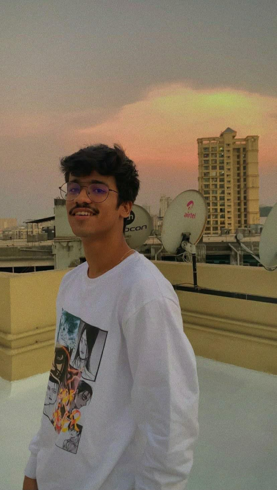

About
My Story
I'm Shubham Waza, a visual artist and brand storyteller based in Mumbai. My work moves between branding, marketing creative, and UI/UX design — helping businesses turn ideas into experiences people actually remember. I care as much about the thinking behind a decision as the pixel it produces.

Creative Philosophy
Good design earns attention. It doesn't demand it.
Every project starts with a question, not a template: what does this brand need to say, and to whom? Strategy comes before style. I'd rather ship a considered, simple solution than a clever one that doesn't hold up under real use.
Skills
Experience & Education